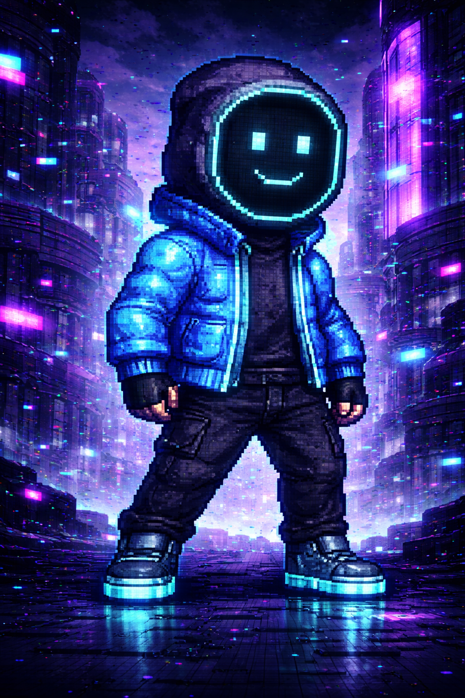

LORE
Quando o sistema que sustentava a realidade entrou em colapso, o mundo não foi destruído — ele foi simplesmente pausado. Cidades inteiras congelaram no tempo, pessoas ficaram presas em um único instante e até o vento deixou de existir. Tudo ao redor se tornou estático, como uma memória corrompida que nunca mais avança.
Após um evento desconhecido no núcleo desse sistema, Kai se tornou a única exceção. Ele é o único capaz de se mover, de correr, de perceber o tempo ainda fluindo enquanto tudo permanece parado. Para ele, o mundo virou um labirinto silencioso, cheio de falhas digitais que surgem e desaparecem sem aviso.
Agora, Kai corre através dessas distorções instáveis, tentando entender o que aconteceu e por que ele ainda existe nesse fluxo quebrado. Cada movimento é um passo mais fundo em uma realidade que já não obedece mais nenhuma lógica — e que pode desaparecer a qualquer momento.
Jogar Agora!
RANKING